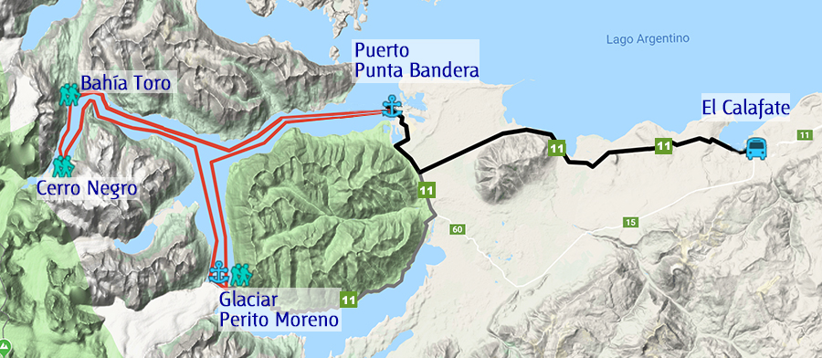

recorrido
Programa
Nuestra embarcación zarpará del Puerto de Punta Bandera e inmediatamente ingresará al Canal de los Témpanos del Lago Argentino. La primera parada (sin desembarcar) será frente a la “Punta Bandera”, sitio histórico, donde Francisco Pascasio Moreno realizó el bautismo del Lago Argentino (el 15 de febrero de 1877). Un mástil marca este lugar tan importante de la historia argentina. El guía de la embarcación hará una explicación al respecto. Continuando con la navegación, ingresaremos al Seno Mayo del Lago Argentino.
(Distancia total caminata: 700mts. aprox. / Dificultad: no la posee, terreno llano.)
Desembarcaremos en Bahía Toro y, acompañados por el guía de la embarcación, realizaremos una caminata interpretativa a través del bosque andino patagónico hasta llegar a la cascada. Desde la costa del lago, podremos observar los glaciares colgantes del Cerro Mayo y del Cerro Negro. Regresaremos a la embarcación y, en tan sólo 15 minutos más de navegación, llegaremos a nuestra próxima parada…
(Distancia total caminata: 1.000mts. aprox. / Dificultad: baja, pendiente suave.)
Desembarcaremos en Cerro Negro y, junto con el guía de la embarcación, iniciaremos una caminata
internándonos en el bosque andino patagónico. Iremos bordeando un río que nos llevará hasta el Cerro Negro,
propiamente dicho. Llegaremos a unos metros de la base de dicho cerro y (desde ahí) podremos contemplar
el maravilloso Glaciar Negro. Éste es un glaciar “colgante” (está sobre la montaña), de él nacen gran cantidad
de cascadas, las cuales dan origen al río que fuimos bordeando durante toda nuestra caminata.
Permaneceremos un tiempo en este lugar, observando el increíble paisaje a nuestro alrededor. Luego,
regresaremos a la embarcación que nos trasladará a nuestro próximo destino…
(Distancia total caminata: 1.000mts. aprox. / Dificultad: baja, pendiente suave.)
Retomando con la navegación, saldremos del Seno Mayo del Lago Argentino para volver a navegar
por el Canal de los Témpanos. En esta parte del recorrido aprovecharemos a almorzar a bordo (llevar vianda).
En pocos minutos, comenzaremos de ver (al final del Canal) la pared norte del glaciar Perito Moreno.
Al llegar ahí, realizaremos una lenta navegación frente a dicha pared.
Luego, desembarcaremos en Puerto Moreno para dirigirnos (en compañía del guía del barco) a las
pasarelas, que se encuentran frente al glaciar Perito Moreno. Allí tendremos tiempo libre para caminar y
observar al glaciar desde los distintos balcones.
A la hora fijada por el guía, regresaremos al Puerto Moreno para volver a embarcar y regresar a nuestra
última parada, el Puerto de Punta Bandera.
TARIFARIO TEMPORADA 2021-2022
Vigencia: a partir del 1° de Octubre del 2021
| CATEGORIA | TARIFA |
| Adultos | 7.500 $ |
| Niños de 6 a 15 años * | 6.000 $ |
| Niños de 1 a 5 años * | Sin Cargo |
* Deberán presentar documentación que acredite dicha categoría.
**Tarifa opcional para traslados 2.000 $
- - Las tarifas son por persona e incluyen IVA
- - Se encuentran expresadas en pesos argentinos (ARS).
- - Las tarifas se encuentran sujetas a cambios previo aviso de 30 días.
- - No incluyen entrada al Parque Nacional.